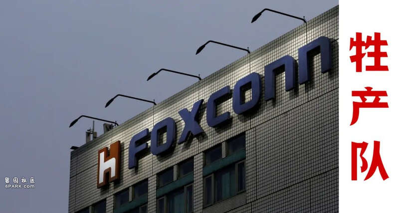
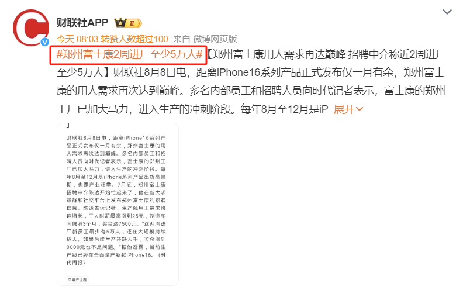
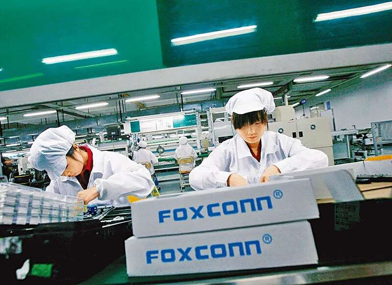
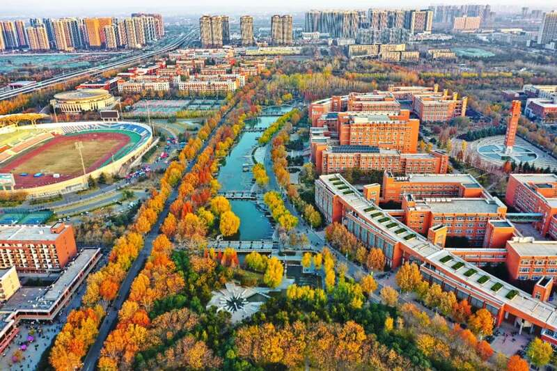
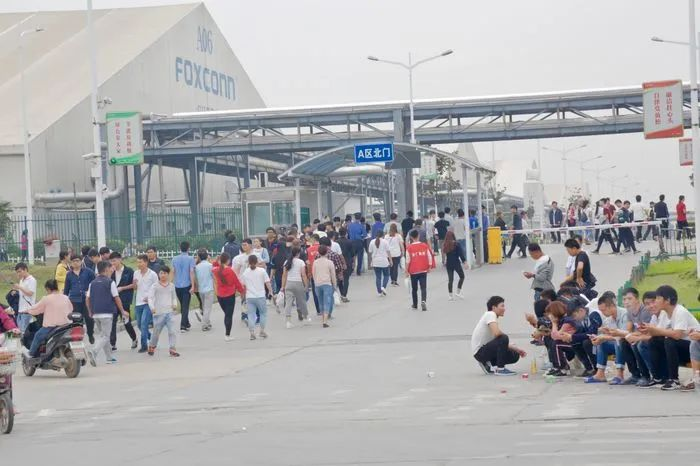
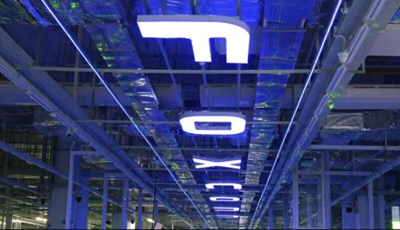

仅2周时间，郑州富士康工厂就招了5万人，可用工需求仍未拉满，还在持续扩招中。为什么这么多人愿意进富士康？核心就在于，待遇确实拉上去了。
普通工人的最高时薪涨到了25块钱/小时，一天干满8小时，就有200块了。再算上加班费，刨除社保，每个月到手工资能超过7000块。在制造车间，干满3个月后，额外奖金还有7500元。这个工资，别说放在郑州了，就是放在深圳工厂，也相当具有竞争力。

工人不是傻子，谁给得多，就给谁干。对比国内的一些小工厂，甚至大工厂，工时不会缩小，工资只会更低，很多厂连社保都不买。为什么富士康能开得起这个待遇？关键就在于，它的订单利润足够高。在外界普遍看来，富士康只是一个组装厂，技术含量很低。可现实却是，全世界，能够拿到苹果代工订单的公司并不多。一个是富士康，另一个就是比亚迪了。富士康主要代工苹果手机，而比亚迪主要代工苹果笔记本电脑。
为什么苹果手机要交给富士康做？最大的因素就是，良品率。你拿一部苹果手机，到深圳，很容易组装出来。但是，能够快速组装上亿部苹果手机，良品率还能超过90%以上的工厂，放在全世界，都是凤毛麟角。即便是在代工领域，苹果公司也有足够的利润分给富士康，这也就让富士康有了足够的资本，去提升工人工资。

当然，这个工资不是郭台铭做慈善，主动给我们的。而是中国整体的工价上去了，不给不行，不给就找不到人。由于最新款的苹果16就要发布了，只剩1个多月时间。苹果手机一旦上市，全球订单都是数以千万计，富士康得提前大量招募，提前大量备货生产。时间紧迫，工人短缺，在市场机制下，富士康被迫提高工价，以最快速度吸引工人返岗。
对郑州而言，富士康的回归，也是重大利好。毕竟，中国是一个人口大国，不能只有高科技企业，也需要富士康这种劳动力密集型企业。为什么美国会工业空心化？就是因为大量的代工业务都被台湾公司抢走了，比如电子代工、芯片代工等。这就造成，美国铁锈带的悲剧，大量底层白人失业。中国人口比美国更多，还遭到西方国家处处打压，中国无法承受如美国一样的失业率。
更何况，如今美国失业率才4%点多，而中国青年失业率已经超过5%。大学生失业，已经是司空见惯了，就连滴滴司机注册数量都满载超标了。对中国这样的人口大国而言，既要华为这种高科技企业，去打破西方技术封锁，也需要富士康这种劳动力密集型企业，为底层普通人提供海量的就业岗位。不是每个人都能进华为，华为需要的是顶尖的高学历人才。
可在这些顶尖的高学历人才背后，中国还有大量的普通大学生，大量的普通工人。这些人也得吃饭，也得就业，也得养家糊口。尤其是河南，人口逼近一个亿，却只有一所211大学，也就是郑州大学。这就意味着，整个河南省，根本就没有顶尖的大学生，考不进郑州大学，走不出河南省的河南年轻人，统统都是非211大学毕业的普通大学生。河南还是一个农业大省，很多年轻人的父母，一辈子都在家里务农。这些大学生毕业后，根本就没有啃老的资格，只能靠自己。

富士康算不上一个高科技的企业，却是一个巨大的就业容器。仅郑州工厂，高峰时期有32万员工。围绕富士康，周边就建设了大量的苹果供应链企业，形成了一个庞大的电子产业工业园区，附近的酒店、餐饮、服装等，常住人口逼近100万。这些人的背后，还有父母妻子，还有在上学的孩子。
北京可以不要富士康，上海可以不要富士康，但郑州不能离开富士康。富士康重返郑州，不只是因为人工便宜。事实上，按这个工资待遇，郑州人工已经不便宜了。比人工便宜，越南、印度的人工，远远低于中国。为什么富士康仍旧要重返郑州？主要有两个原因：

一是，齐全的配套产业链。苹果手机的生产旺季，也就那么几个月而已。供应链必须高效运转，所有零部件实时到货，不能出现任何偏差。这是印度、越南都不具备的，它们还得从中国进口零部件。
二是，押注中国新能源制造。手机代工，富士康已经做到极致了，没有增量了。富士康要寻找新的增量，一个重要领域就是打入新能源汽车供应链。况且，富士康已经打入奔驰、特斯拉等汽车供应链了。纵观全球，最大规模的新能源汽车制造，就在中国。离开中国，就等于跟新能源脱节了。
富士康离不开中国强大的制造产业链，而郑州也需要富士康创造海量的就业。这种相互依存的关系，短期内难以改变。

这不是富士康给河南人赏一口饭吃，也不是河南人可以甩掉富士康那么简单。为什么我们都希望沿海制造业不要转移到海外，而是向中西部转移？因为中国的中西部，还有很多人需要一份家门口的工作，一份不需要背井离乡，在本地就能安居乐业的工作。
从国内产业转移来讲，富士康从深圳转移到郑州，恰恰是最成功的案例。